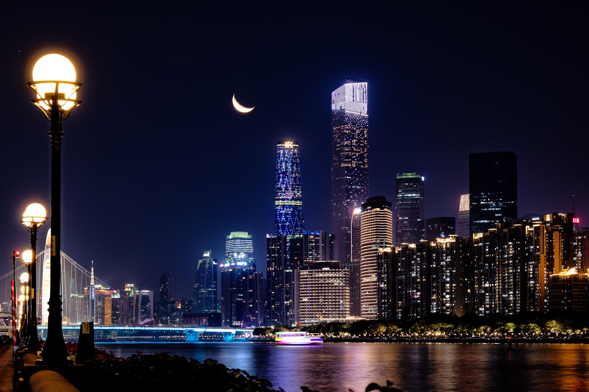
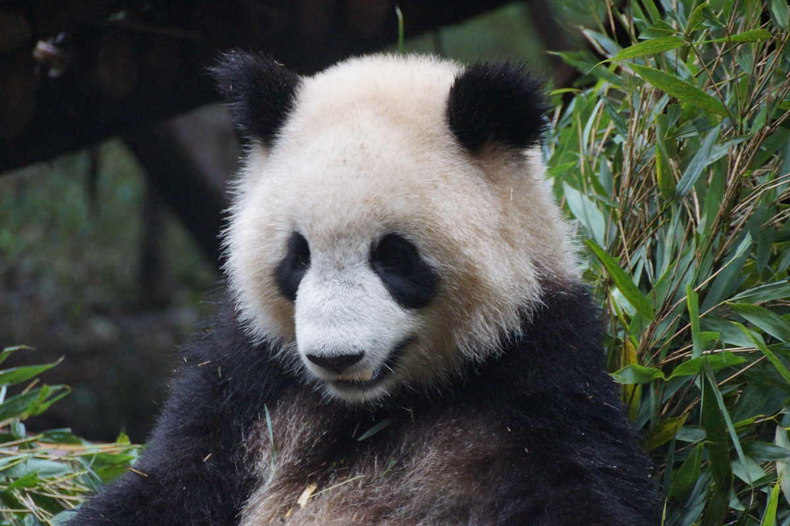
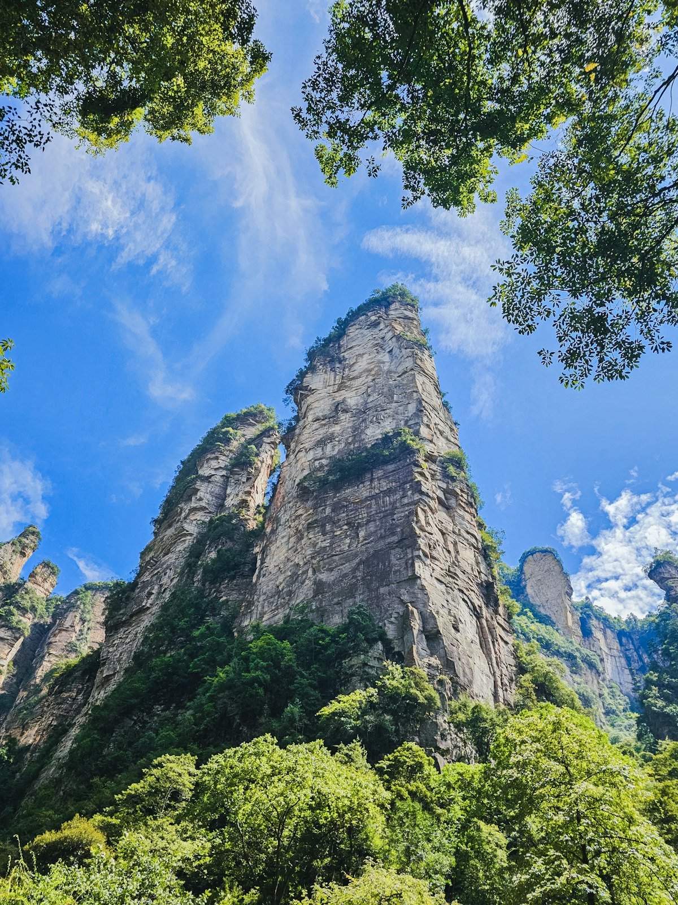
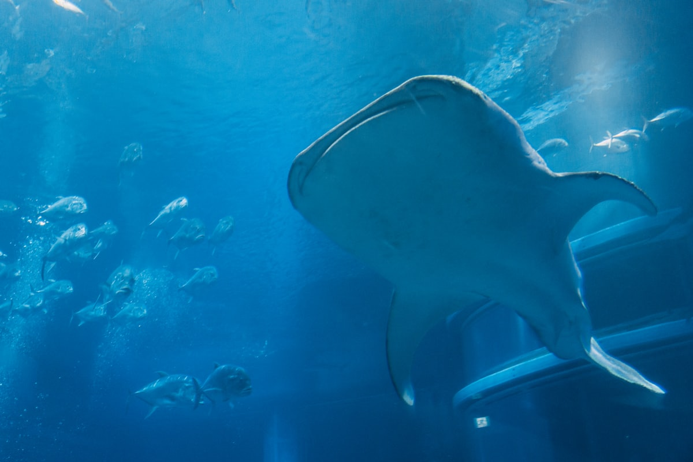
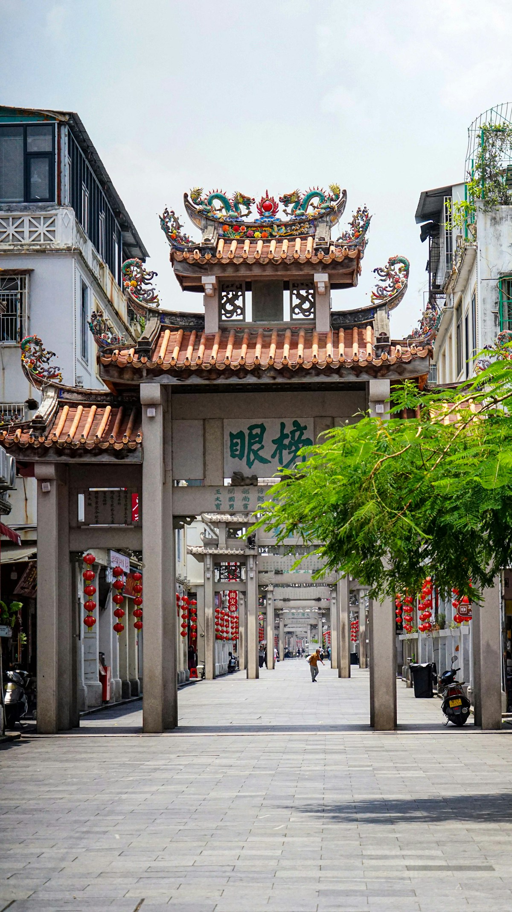
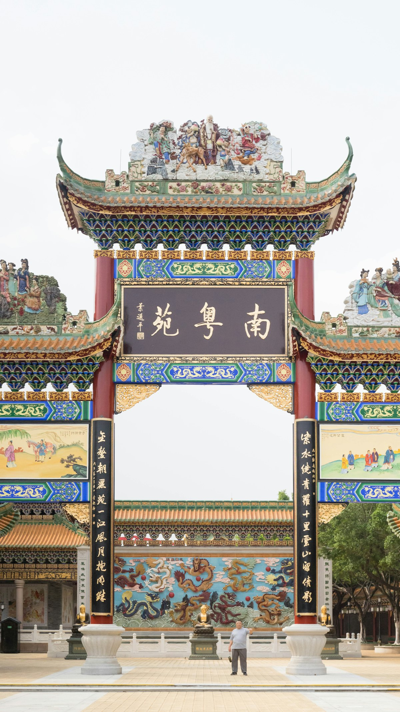
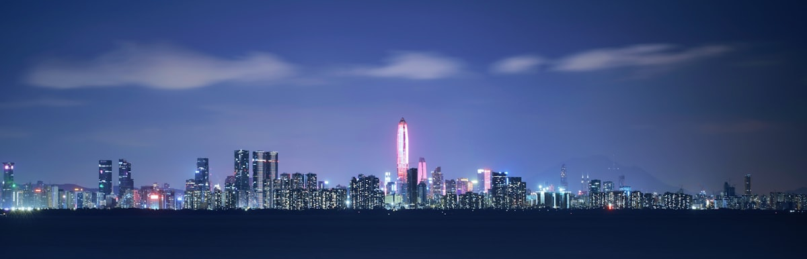
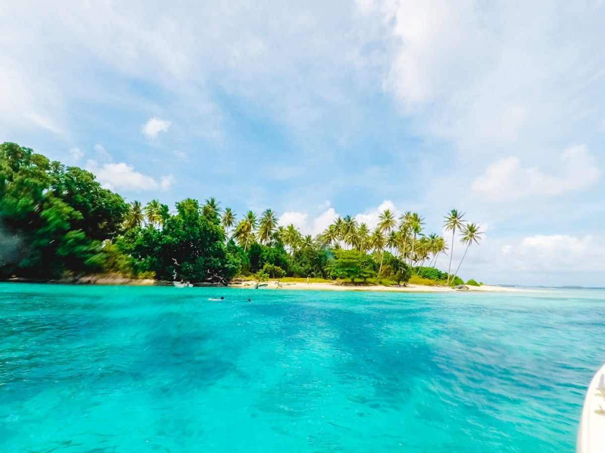

| 事项 | 结论 |
|---|---|
| 事项 | 结论 |
| 推荐方案 | 10 天 9 晚（广州 3 + 丹霞 2 + 深圳珠海 3 + 潮汕 2） |
| 返程约束 | 第 10 天从潮汕站高铁返程，或返广州/深圳飞走 |
| 行程链 | 广州 → 长隆 → 丹霞山 → 深圳 → 珠海 → 潮汕 |
| 预算（人均） | 经济 3500–5000 ／ 标准 5500–7500 ／ 舒适 9000–13000 |
| 三件提前事 | ① 长隆/海洋王国提前订票避高峰 ② 丹霞山门票提前 1–3 天预约 ③ 周末潮汕酒店提前 2 周订 |
| 季节提醒 | 秋季最舒适；夏季湿热多台风，春季回南天潮湿，冬季温暖适合避寒 |
| 交通卡 | 广州/深圳地铁支持手机扫码，城际高铁随买随走 |
以下为 10 天 9 晚的推荐节奏。每日主景点 ≤2 个，城际移动集中在上午/傍晚。
| 日期 | 行程 | 过夜地 | 主题 |
|---|---|---|---|
| D1 抵穗 | 入住珠江新城/北京路，傍晚广州塔 + 珠江夜游 | 珠江新城一带 | 抵达 + 都市夜景 |
| D2 | 陈家祠 → 沙面 → 永庆坊 → 北京路步行街 | 广州老城 | 广府人文 |
| D3 | 长隆野生动物世界（全天） | 广州番禺 | 乐园亲子 |
| D4 | 高铁至韶关 → 丹霞山长老峰、阳元石 | 丹霞山脚下 | 丹霞地貌 |
| D5 | 丹霞山翔龙湖/锦江 → 午后高铁经广州至深圳 | 深圳福田 | 转场 + 都市 |
| D6 | 世界之窗/锦绣中华 → 深圳湾公园 → 欢乐海岸 | 深圳南山 | 深圳都市 |
| D7 | 蛇口船至珠海 → 珠海长隆海洋王国（全天） | 珠海横琴 | 海洋王国 |
| D8 | 情侣路 → 珠海渔女 → 日月贝 → 下午高铁去潮汕 | 潮州古城 | 海滨转场 |
| D9 | 牌坊街 → 广济桥 → 开元寺 → 汕头小公园（可选） | 潮州古城 | 潮汕文化 |
| D10 返程 | 上午自由活动/采购手信，午后潮汕站高铁返程 | — | 收尾 |
以下为 10 天全程的逐小时执行时间线，可当作「当天打开照着走」的清单。标注 ※ 的可选项视体力与天气取舍。
| 时间 | 事项 |
|---|---|
| 14:00–17:00 | 抵达广州（高铁到广州南/广州东，飞机到白云机场），地铁 3 号线进市区 |
| 17:30–18:30 | 办理入住（推荐珠江新城或北京路，近地铁与景点） |
| 19:00–21:00 | 广州塔（观景台参考价 150 元起）登塔看珠江新城全景，或 花城广场 隔江拍塔 |
| 21:00–22:00 | 珠江夜游（游船约 60–100 元）：天字码头/广州塔码头出发，看两岸灯光 |
| 22:00 | 回酒店休息 |
| 时间 | 事项 |
|---|---|
| 08:30–10:00 | 陈家祠（参考价 10 元）：岭南建筑艺术博物馆，看灰塑、砖雕、木雕 |
| 10:30–12:30 | 沙面岛（免费）：百年欧陆建筑群，江边散步拍照 |
| 12:30–13:30 | 午餐：上下九/荔湾老字号（肠粉、艇仔粥、云吞面） |
| 14:00–16:00 | 永庆坊（免费）：恩宁路骑楼改造街区，粤剧艺术博物馆、文创小店 |
| 16:30–19:00 | 北京路步行街（免费）：千年古道遗址 + 广州老字号，晚餐牛杂煲/烧腊 |
| 19:30 | 回酒店休息 |
| 时间 | 事项 |
|---|---|
| 08:30 | 早餐后地铁 3 号线汉溪长隆站直达（或打车约 40 分钟） |
| 09:30–12:00 | 长隆野生动物世界（参考价 300 元起）：小火车穿越乘车游览区，看长颈鹿、大象 |
| 12:00–13:00 | 园区内餐厅简餐 |
| 13:00–16:00 | 步行游览区：熊猫乐园、考拉馆、白虎山、侏罗纪森林 |
| 16:30–18:00 | 可选※ 长隆大马戏（参考价 280 元起）或 4D 影院 |
| 18:30 | 晚餐：长隆周边或回市区，早点休息 |
| 时间 | 事项 |
|---|---|
| 08:00–09:30 | 广州南乘高铁至韶关站（约 50–60 分钟，参考价约 90 元） |
| 09:30–11:00 | 韶关站打车/大巴至丹霞山景区（约 1 小时） |
| 11:00–15:00 | 丹霞山（参考价约 100 元，含长老峰与阳元石）：阳元石观景台、登长老峰看锦江环绕的赤壁丹崖 |
| 15:00–17:30 | 翔龙湖游船/观日亭，傍晚光线下的红色砂岩最出片 |
| 18:30 | 入住景区大门附近酒店，晚餐当地农家菜（韶关土鸡、竹笋） |
| 时间 | 事项 |
|---|---|
| 07:30–09:30 | 清晨再游锦江（可选竹筏/游船约 100 元）或睡到自然醒 |
| 09:30–11:00 | 退房，乘车返回韶关站 |
| 11:30–14:00 | 高铁经广州南转乘至深圳北/福田（全程约 2.5 小时） |
| 15:00–17:30 | 深圳湾公园（免费）：15 公里海滨栈道，红树林 + 隔海看香港 |
| 18:00–20:00 | 欢乐海岸/海岸城晚餐，可选 ※ 世界之窗夜场（参考价 120 元起） |
| 20:30 | 回酒店（推荐福田/南山，近地铁） |
| 时间 | 事项 |
|---|---|
| 09:00–13:00 | 世界之窗（参考价约 220 元）：世界微缩景观 + 表演；或 锦绣中华（约 200 元）看中国名胜微缩 |
| 13:00–14:00 | 园区内或世界之窗站周边午餐 |
| 14:30–17:00 | 福田 CBD：平安金融中心云际观光层（参考价约 200 元）俯瞰全城，或 莲花山公园 看城市中轴 |
| 17:30–19:30 | 蛇口海上世界（免费）：明华轮 + 海滨街区，晚餐海鲜/日料 |
| 20:00 | 回酒店 |
| 时间 | 事项 |
|---|---|
| 08:00–09:30 | 深圳蛇口码头乘船至珠海横琴码头（约 60–70 分钟，参考价约 130 元） |
| 10:00–18:00 | 珠海长隆海洋王国（参考价约 350 元）：鲸鲨馆、企鹅馆、海豚表演、5D 城堡影院 |
| 12:30 | 园区内午餐 |
| 18:00–20:00 | 可选※ 长隆夜光巡游 + 烟花秀（周末/节假日晚 8 点前后） |
| 20:30 | 入住横琴酒店或回市区 |
| 时间 | 事项 |
|---|---|
| 08:30–10:30 | 情侣路海滨步道 + 珠海渔女雕像（免费） |
| 10:30–12:00 | 日月贝（珠海大剧院）（免费外观）：贝壳造型地标，海边拍照 |
| 12:00–13:00 | 午餐：珠海海鲜或猪扒包 |
| 13:30–16:30 | 珠海站乘高铁经广州南中转至潮汕站（全程约 3 小时） |
| 17:00–18:30 | 入住潮州古城民宿（牌坊街附近），傍晚逛牌坊街夜景 |
| 19:00 | 晚餐：潮汕牛肉火锅（参考人均 60–100 元） |
| 时间 | 事项 |
|---|---|
| 08:30–10:00 | 牌坊街（免费）：23 座石牌坊，两侧骑楼小吃 |
| 10:00–11:30 | 广济桥（参考价 20 元）：中国四大古桥之一，启闭式浮桥，下午 5 点拆桥 |
| 11:30–13:00 | 午餐：潮州小吃（蚝烙、粿条、春卷、工夫茶） |
| 13:30–15:00 | 开元寺（免费）：粤东最大古刹，唐代始建 |
| 15:30–18:00 | 可选 ※ 汕头小公园（约 1 小时车程）：民国骑楼街区；或韩文公祠 + 广济门城墙 |
| 18:30 | 晚餐：潮州卤鹅、鱼生；夜游 ※ 广济桥灯光秀（参考 20:00/21:30 两场） |
| 时间 | 事项 |
|---|---|
| 08:00–08:30 | 早餐后退房，行李寄存民宿前台 |
| 08:30–11:00 | 自由活动：牌坊街买潮州三宝（老香黄、老药桔、橄榄）与茶具 |
| 11:00–12:00 | 午餐 |
| 12:30–16:00 | 退房，乘高铁/打车至潮汕站，返程（或经广州南回广州/深圳飞走） |
必去（必去）/ 顺路（顺路）/ 可跳过（可跳过）。

必去
必去
必去
必去
顺路
顺路
可跳过图片为 Unsplash 主题图（广州塔、丹霞山地貌、海洋馆、古城老街等均为同主题示意图），用于页面配图。更多免费景点：沙面岛、永庆坊、北京路、珠海情侣路、日月贝。
点击左侧节点可在地图上定位；点击地图 marker 会高亮对应节点。坐标为 WGS-84 转 GCJ-02 纠偏后标注。
以下为单人、不含购物的估算；门票为旺季参考价，以现场为准。交通按高铁往返计（从华东/华北出发约 1200–1800 元），省内城际高铁另计约 500–800 元，不同出发地浮动较大。
| 项目 | 经济（3500–5000） | 标准（5500–7500） | 舒适（9000–13000） |
|---|---|---|---|
| 往返交通 | 高铁约 1200–1500 | 高铁/飞机约 1500–2500 | 飞机 + 接送约 3000–4000 |
| 省内城际 | 高铁约 400–500 | 高铁 + 船约 600–800 | 包车/自驾约 1500–2000 |
| 住宿（9 晚） | 青旅/快捷 900–1350 | 连锁酒店 1800–2700 | 珠江新城/横琴度假 4500–6000 |
| 门票 | 核心景点约 700 | 含长隆两园约 1000 | 全含 + 大马戏约 1500 |
| 餐饮（10 天） | 600–800 | 1200–1600（含海鲜） | 2000–2800（老字号 + 潮菜） |
带娃推荐：长隆野生动物世界 + 珠海海洋王国连玩两日，丹霞山改为广州动物园/广东省博物馆；南澳岛换成长隆水上乐园（夏季）。乐园票提前在官方 App 买套票更划算。
10–12 月气温 18–25℃，最适合避寒；游客少、酒店价格比旺季低 30–50%，丹霞山秋色和潮汕美食都是最佳状态。注意 7–9 月台风季，出行前查台风路径。
| 方式 | 时长 | 参考价 | 备注 |
|---|---|---|---|
| 高铁（推荐） | 视出发地 3–8h | 二等座 300–1800 元 | 广州南/深圳北为主，全国枢纽 |
| 飞机 | 视出发地 1–3h | 400–2000 元 | 白云/宝安/珠海三机场，机场地铁/城际进城 |
| 自驾 | 视出发地 | 高速费 + 油费 | 珠三角高速路网发达，节假日堵车严重 |
| 区域 | 价格/晚 | 优点 | 短板 |
|---|---|---|---|
| 广州珠江新城/北京路 | 快捷 300–500 / 星级 700–1500 | 近地铁、广州塔、老字号 | 旺季与展会期贵 |
| 丹霞山大门区 | 民宿/酒店 200–400 | 进出景区方便，农家菜好 | 设施偏简单 |
| 深圳福田/南山 | 快捷 300–500 | 近地铁、深圳湾、CBD | 周末房价上浮 |
| 珠海横琴 | 度假酒店 500–900 | 紧邻海洋王国，家庭首选 | 离市区远，餐饮少 |
| 潮州古城（牌坊街） | 民宿 250–500 | 老宅改造有韵味，逛吃方便 | 老房隔音一般 |